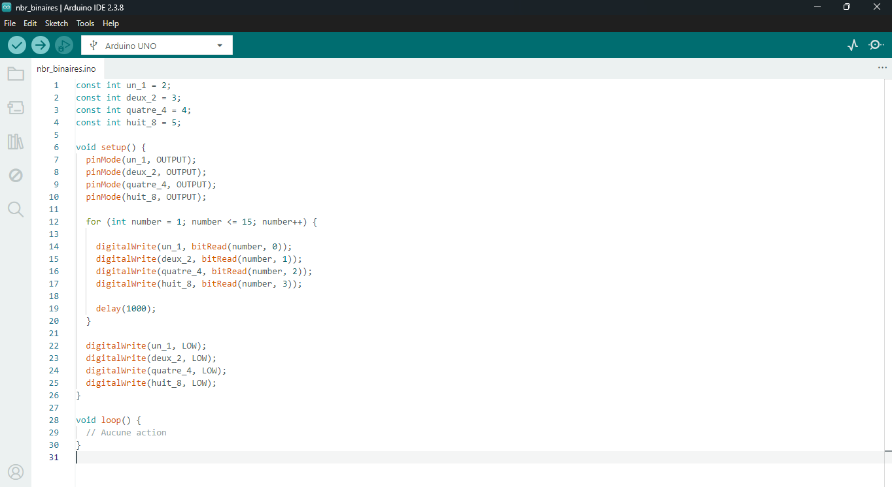
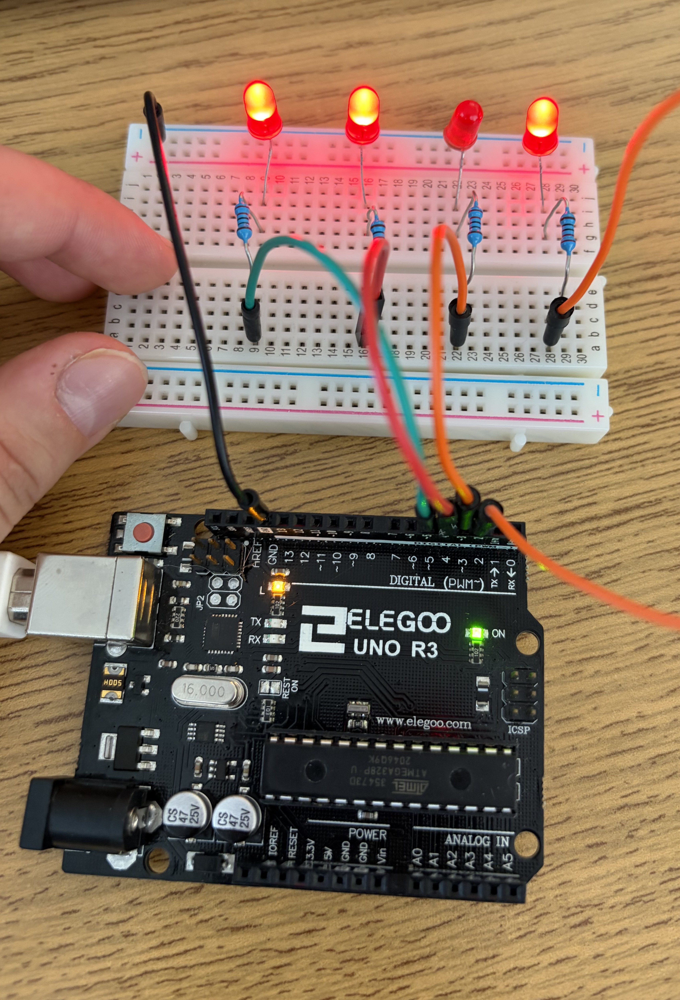

J'ai écrit un algorithme dans l'EDI du Arduino qui permet à 4 DEL rouges en parallèle d'afficher un chiffre en nombre binaire, de 1 à 15. Chaque DEL repésente une place dans le chiffre binaire et le chiffre binaire se lit de gauche à droite. J'ai utilisé un résistor de 220 Ohms avec chaque DEL pour limiter la tension à travers la DEL. Dans le code, j'assigne le nombre de la broche pour chaque place du nombre binaire et je les mets en mode sortie et digital dans la fonction setup. Puis, je compte tous les chiffres binaires de 1 à 15 en utilisant une boucle for et la fonction bitRead qui détermine si le bit que je spécifie est HIGH ou LOW et je retourne à 0. Dans ce projet j'ai appris comment utiliser la fonction bitRead pour décomposer un nombre binaire et j'ai appris que si je ne mets pas une pause avec delay, les DELs clignotent trop vite.

La photo montre les DELs allumées pour le nombre binaire 1101 qui repésente 13 en base décimal.